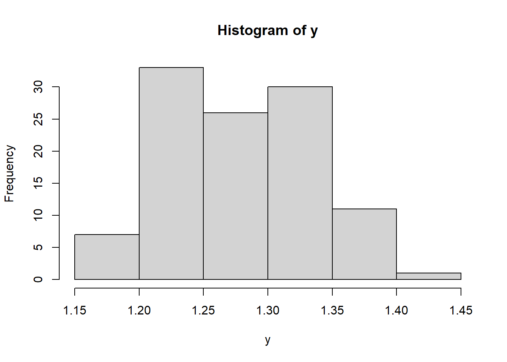
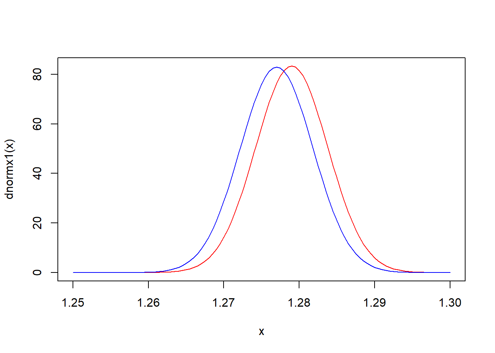

Chapter 12 Bayesian Statistics
12.1 Introduction
All of the statistical methods we have discussed so far could be rightly described as “frequentist” in nature. Frequentist statistics, broadly speaking, is concerned with the random behavior of statistics (functions of randomly sampled data) over repeated sampling from the population under study. In frequentist statistics probability is used to describe random behavior induced by random sampling. And, by and large, the effectiveness of frequentist methods—like tests and confidence intervals—is judged by their random behaviors over repeated sampling; e.g., by the type 1 error and power of tests, and the coverage probability of interval estimators.
In contrast, Bayesian statistics uses probability in two distinct ways: to describe random sampling variability in much the same way as frequentist statistics, and to characterize the uncertainty in unknown parameters. This second use of probability is novel, compared to frequentist statistics (although Bayesian statistics came first chronologically). In frequentist statistics unknown parameters—like the unknown mean \(\mu\) of a normal population—are treated as unknown constant variables. In Bayesian statistics, unknown parameters are (mostly) treated as random variables—but, users of Bayesian statistics do not necessarily believe them to be random variables.
There are some interesting consequences of treating parameters as a random variables. For one, information or assumptions about the parameters apart from the data can be used to assign a prior probability distribution to the parameters, effectively describing their random behavior, or, the beliefs about likely values of those parameters before any data from the population is collected. Second, treating the parameters as random variables allows one to assign probabilities to assertions about the parameters, e.g., \(P(\mu \leq 2)\) where \(\mu\) is the unknown mean of a normal population under study. In frequentist statistics, no such (non-trivial) probability makes sense. However, the interpretation of such Bayesian probabilities is somewhat unclear—they are not frequentist probabilities describing behavior of the parameter with respect to repeated sampling because the parameter has no random sampling distribution.
12.2 Bayesian methods in general
Bayesian statistics is similar to frequentist likelihood-based inference in that both start with a likelihood describing the sampling distribution of the data, say, \(f(x;\theta)\). For iid data we have \(L(\theta) = \prod_{i=1}^n f(x_i;\theta)\) as usual. Bayesian statistics, however, requires an additional ingredient, the prior distribution mentioned above, denoted \(\pi(\theta)\). Recall that the likelihood is the joint distribution of the data given the parameter value \(\theta\). But, now regard the parameter as a random variable, and see that the likelihood is the conditional distribution of the data given the random parameter takes on a certain value. Since the joint distribution of random variables (denoted \(g\) below) is equal to the product of their conditional and marginal distributions, we have
\[g(X_1, \ldots, X_n, \theta) = f(X_1, \ldots, X_n| \theta)\pi(\theta) = L(\theta)\pi(\theta).\]
All Bayesian inference (and prediction) is based on the posterior distribution \(\Pi_n(\theta)\), which is the conditional distribution of the parameter \(\theta\) given the observed data, and is derived using Bayes’ Rule:
\[\Pi_n(\theta) = \frac{L(\theta)\pi(\theta)}{\int L(\vartheta)\pi(\vartheta)d\vartheta }\]
where the denominator is the marginal density of the data, \(f(x_1, \ldots, x_n) = \int f(x_1, \ldots, x_n,\vartheta)d\vartheta\), obtained by integration in the usual manner.
If the prior distribution represents what is known (or assumed) about the parameter before data is observed, then the posterior distribution represents the up-to-date knowledge (or beliefs) about the parameter after data is observed.
The posterior distribution for a parameter can usually be used to recreate methods analogous to frequentist ones. For example, suppose \(\theta\) is a scalar parameter so that \(\Pi_n(\theta)\) is a univariate density. We could define a \(100(1-\alpha)\%\) credible interval for \(\theta\) as the interval of values between the \(\alpha/2\) and \(1-\alpha/2\) quantiles of \(\Pi_n(\theta)\). One might expect that since the Bayesian posterior is based on the likelihood that such an interval would be similar to a confidence interval constructed using a frequentist likelihood-based technique, like a Wald or likelihood ratio-based interval. Usually, that is the case. Hypothesis testing is less straightforward in Bayesian statistics. For example, consider the point null hypothesis \(H_0:\mu = \mu_0\) about a normal population mean. The posterior will be a continuous distribution for \(\mu\), and as such, the posterior probability of the null hypothesis will be \(P(\mu = \mu_0) = 0\). Therefore, it wouldn’t make much sense to accept null hypotheses with large posterior probabilities, because point nulls will always have zero probability under continuous posteriors. Alternatively, one might define a testing rule in reference to the posterior credible interval above, e.g., reject the null if \(\mu_0\) is not in the \(100(1-\alpha)\%\) credible interval for some specific choice of \(\alpha\). In many cases, such a test behave similarly to frequentist-based hypothesis tests.
12.3 Bayesian methods for a single normal population
Suppose \(X_i \stackrel{iid}{\sim}N(\mu, \sigma^2)\), which represents a normal population with an unknown mean and a known variance. Also, suppose the prior distribution \(\pi(\mu)\) is chosen to be \(N(\mu_0, \sigma_0^2)\) for known values \((\mu_0, \sigma_0^2)\)—these are often called hyperparameters.
The posterior distribution for \(\mu\) is proportional to \(L(\mu)\pi(\mu)\), treating the denominator as a proportionality constant. Multiplying the likelihood and prior, we have \[\begin{align*} \Pi_n(\mu)\propto L(\mu)\pi(\mu)\\ & = (2\pi\sigma^2)^{-n/2}(2\pi\sigma_0^2)^{-1/2}\exp\left\{-\frac{1}{2\sigma^2}\sum_{i=1}^n(x_i - \mu)^2 - \frac{1}{2\sigma^2}(\mu - \mu_0)^2\right\} \end{align*}\] Look only at the expression in the exponent, and complete the square in \(\mu\) to get \[\begin{align*} -\frac{1}{2\sigma^2}&\sum_{x_i - \mu}^2 - \frac{1}{2\sigma_0^2}(\mu - \mu_0)^2\\ & = \mu^2\left[-\frac{n}{2\sigma^2}-\frac{1}{2\sigma_0^2}\right] + \mu\left[\frac{n\bar x}{\sigma^2} + \frac{\mu_0}{\sigma_0^2}\right] - \frac{1}{2\sigma^2}\sum x_i^2 - \frac{\mu_0^2}{2\sigma_0^2}\\ & = -\frac{1}{2\left[\frac{1}{\frac{n}{\sigma^2} + \frac{1}{\sigma_0^2}}\right]}\left(\mu^2 - 2\mu \frac{\frac{n\bar x}{\sigma^2} + \frac{\mu_0}{\sigma_0^2}}{\frac{n}{\sigma^2} + \frac{1}{\sigma_0^2}} - \left[\frac{\frac{n\bar x}{\sigma^2} + \frac{\mu_0}{\sigma_0^2}}{\frac{n}{\sigma^2} + \frac{1}{\sigma_0^2}}\right]^2\right) - \frac{1}{2\sigma^2}\sum x_i^2 - \frac{\mu_0^2}{2\sigma_0^2} - \frac{1}{2}\frac{\left[\frac{n\bar x}{\sigma^2} + \frac{\mu_0}{\sigma_0^2}\right]^2}{\frac{n}{\sigma^2} + \frac{1}{\sigma_0^2}}\\ & = -\frac{1}{2\left[\frac{1}{\frac{n}{\sigma^2} + \frac{1}{\sigma_0^2}}\right]}\left(\mu - \frac{\frac{n\bar x}{\sigma^2} + \frac{\mu_0}{\sigma_0^2}}{\frac{n}{\sigma^2} + \frac{1}{\sigma_0^2}}\right)^2 + (\text{constants in }\mu). \end{align*}\] The above calculation shows that the part of likelihood\(\times\)prior depending on \(\mu\) appears to be a normal density function. Therefore, since the posterior must be a proper density function (integrating to 1) it follows that \[\Pi_n(\mu) \text{ is }N\left(\text{mean }= \frac{\frac{n\bar x}{\sigma^2} + \frac{\mu_0}{\sigma_0^2}}{\frac{n}{\sigma^2} + \frac{1}{\sigma_0^2}}, \,\,\text{variance }=\frac{1}{\frac{n}{\sigma^2} + \frac{1}{\sigma_0^2}}\right).\]
Two remarks about the posterior distribution are quite important. First, notice that the posterior mean may be rewritten as the following weighted average: \[\frac{\frac{n\bar x}{\sigma^2} + \frac{\mu_0}{\sigma_0^2}}{\frac{n}{\sigma^2} + \frac{1}{\sigma_0^2}} = \bar x \frac{\frac{\sigma^2}{n\sigma_0^2}}{1+\frac{\sigma^2}{n\sigma_0^2}} + \mu_0\frac{1}{1+\frac{\sigma^2}{n\sigma_0^2}}.\] And, when \(n\) is large, the posterior mean is approximately \(\bar x\) because the weight on \(\bar x\) approaches 1 while the weight on \(\mu_0\) approaches 0. The posterior variance may be rewritten as \[\frac{1}{\frac{n}{\sigma^2} + \frac{1}{\sigma_0^2}} = \frac{\sigma^2}{n+\sigma^2/\sigma_0^2}\approx \sigma^2/n\] where the approximation holds for large \(n\). The upshot is that the posterior is almost the same as the sampling distribution of \(\overline X\) when \(n\) is large. Consequently, frequentist and Bayesian inferences (e.g. \(95\%\) confidence/credible intervals for \(\mu\)) will agree when the sample size is large. The second remark is that the posterior distribution turned out to be the same kind of distribution as the prior distribution. The relationship between the prior, likelihood, and posterior in which the prior and posterior are the same type of distribution is called conjugacy. In general, the prior and posterior are only conjugate for certain choices of prior for certain likelihood—conjugacy is the exception, not the rule.
12.3.1 Example
A certain transformation of iron levels in water sampled from sites in the Mississippi river is well-modeled by a normal distribution. Previous studies suggest mean iron level around 1.5 (on the transformed scale) with standard deviation 0.05—so the prior distribution is set to be \(N(\mu_0 =1.5,\sigma_0^2=0.05^2)\). 108 iron readings are obtained in a new experiment with a mean of 1.277. Assuming a normal variance of \(\sigma^2 = 0.05^2\) the posterior is \(N(1.279, 0.05^2/109)\). The sampling distribution of \(\overline X\), on the other hand, is \(N(1.277, 0.05^2/108)\). The two are plotted below in red and blue, respectively. The \(95\%\) confidence interval for \(\mu\) is \((1.2675,\,1.2864)\) while the corresponding credible interval is \((1.2696, \,1.2884)\).
library(SASmixed)
y <- (Multilocation$Fe^{-1/2}-1)/(-1/2)
hist(y)
mean(y)## [1] 1.276776dnormx1 <- function(x) dnorm(x, 1.279,sqrt(0.05*0.05/109))
dnormx2 <- function(x) dnorm(x, 1.277,sqrt(0.05*0.05/108))
curve(dnormx1, 1.25,1.3, col = 'red')
curve(dnormx2, 1.25,1.3, col = 'blue', add = TRUE)